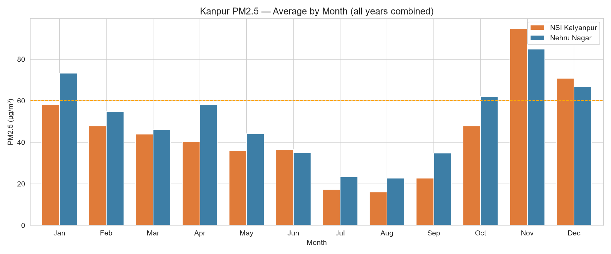
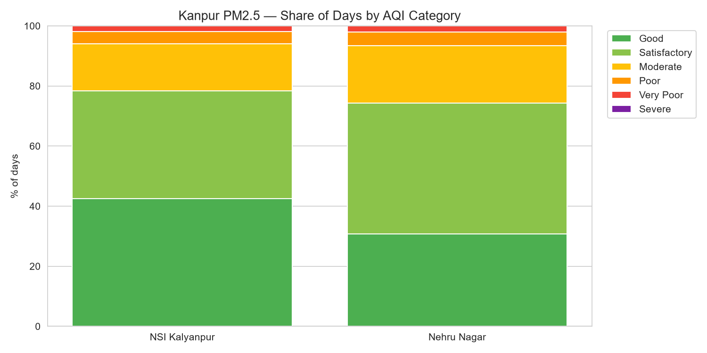
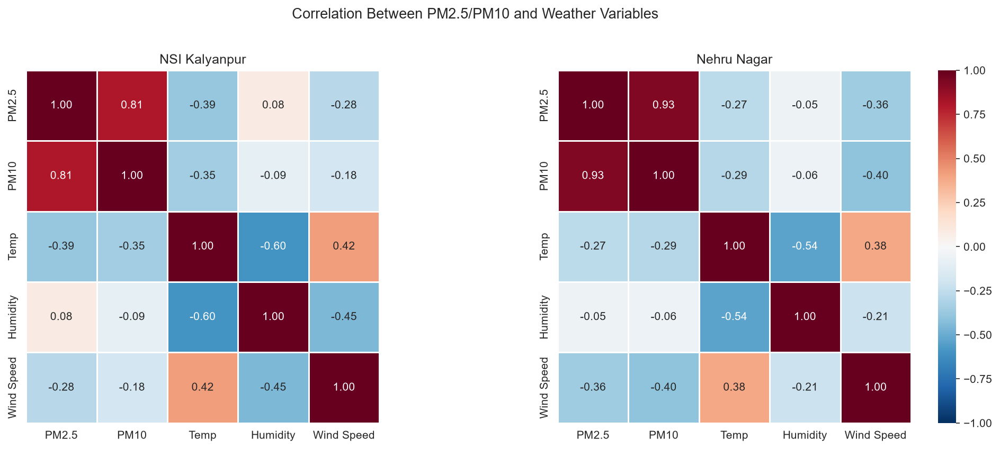

Kanpur: Spatial Particulate Dynamics & Meteorological Dispersal
An empirical investigation into continuous PM2.5 and PM10 telemetry across two monitoring stations in Kanpur, Uttar Pradesh (NSI Kalyanpur & Nehru Nagar), analyzing seasonal inversion multipliers, boundary layer collapse, and weather correlations.
Dual-Station Urban Contrast
Consistently ranked among the world's most acute urban airsheds, Kanpur presents a distinct geographical case study. This investigation compares two station typologies: NSI Kalyanpur (Station ID: 229252), representing an industrial and highway corridor on the city's western periphery, versus Nehru Nagar (Station ID: 5662), capturing dense commercial and residential traffic.
Continuous telemetry reveals that particulate severity is not localized to industrial point sources alone. Both stations track remarkably synchronized seasonal cycles, proving that broad meteorological trapping—specifically temperature inversions and calm boundary layers—dominates ground-level human exposure across the city.





